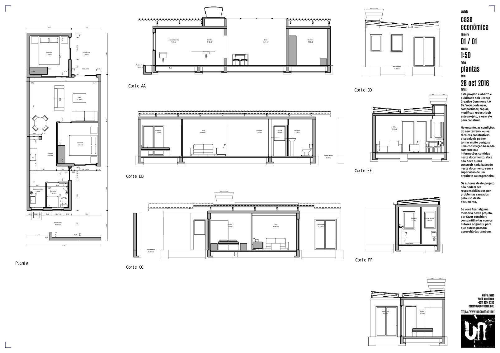
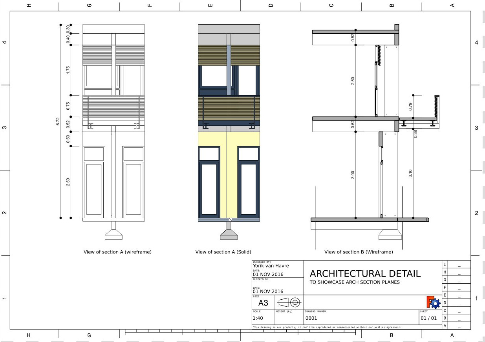
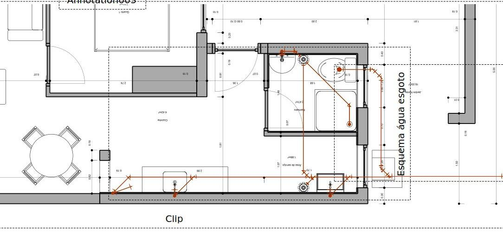

Nouvelle vue Arch
|
| Emplacement du menu
|
| TechDraw → Vue Arch
|
| Ateliers
|
| TechDraw
|
| Raccourci par défaut
|
|
|
| Voir aussi
|
|
|
|
Description
L'outil Vue Arch insère une vue d'une Coupe Arch sur une page TechDraw.

- Sélectionnez un plan de section Arch dans la vue 3D ou dans l'arborescence
- Si vous avez plusieurs pages de dessin dans votre document, vous devrez sélectionner la page désirée dans l'arborescence.
- Appuyez sur le bouton Vue Arch
- Une vue des objets vus par le plan de coupe apparaîtra sur la page.
Options
- La Vue Arch est rendue par l'atelier Arch, de la même manière que dans l'atelier Drawing. Voir les notes.
- Draft Dimensions, Textes Draft et tout autre objet 2D (Esquisse ou Dessin Draft) considéré par le plan de section est rendu "tel quel" (pas d'intersection ou de lignes cachées) par dessus la géométrie du solide.
- Le volume de l'Espace Arch n'est pas rendu, seul le label sera rendu.
- Les lignes de coupe, les lignes projetées (si la propriété "Afficher les parties cachées" est définie sur Vrai) et les lignes 2D ci-dessus peuvent être rendues avec des largeurs de ligne différentes. Cela peut être configuré dans les préférences Arch.
- La Vue Arch a deux modes de rendu: Filaire, qui utilise les algorithmes OpenCasCade du Drawing_Module/fr, est rapide et ne produit que des lignes (pas de remplissage de vue possible), et Solide, qui est basé sur Painter's algorithm, et est capable de rendre les faces remplies de leur couleur de forme. Cependant, il est beaucoup plus lent et peut échouer dans de nombreuses situations. L'image ci-dessous illustre la différence entre les deux modes de rendu:

- Seule la ligne de base des Tubes Arch est rendue, pas le volume total des tubes:

Propriétés
- DONNÉESSource: L'objet plan de section à afficher
- DONNÉESAll On: Si des objets cachés doivent être montrés ou non. Si la valeur est False, seuls les objets visibles dans la vue 3D sont rendus
- DONNÉESRender Mode: Le mode de rendu à utiliser, solide ou filaire
- DONNÉESShow Hidden: Si la géométrie cachée (la partie de la géométrie qui se trouve derrière le plan de coupe) est montrée ou non. Elle sera rendue en ligne pointillée, qui peut être configurée dans les préférences Arch.
- DONNÉESShow Fill: Si les zones de coupe doivent être remplies avec une couleur grise ou non
- DONNÉESLine Width: L'épaisseur des lignes principales. Les lignes de coupe et les rapports d'épaisseur des lignes projetées / 2D peuvent être configurés dans les préférences Arch
- DONNÉESFont Size: La taille de tous les textes qui apparaissent dans cette vue
Script
Vue Arch peut être ajoutée aux Pages en utilisant le code Python.
dv = FreeCAD.ActiveDocument.addObject('TechDraw::DrawViewArch','TestArch')
dv.Source = mySectionPlane
rc = page.addView(dv)
Notes
- Since the ArchView is rendered within the Arch Module, TechDraw has limited control over it's appearance. You may need to make changes within Arch to get the representation you want.
{kind=link}
{kind=link}
{kind=link}
{kind=link}
{kind=link}